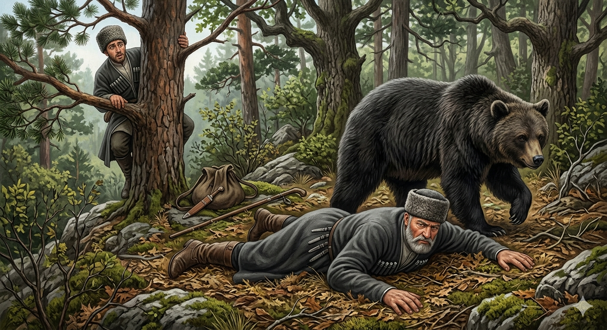

И.А. Дахкильгов. Хьехаме дувцарш - поучительные рассказы-притчи.
И.А. Дахкильгов. Хьехаме дувцарш - поучительные рассказы-притчи. Из ингушского фольклора.

Чано аьннар
ХьунагӀа ваха хиннав ши новкъост. Дукха гаьна йоацаш, петарашта юкъера ча гучаийккхай. Кхеравенна, царех цхьа новкъост тарсал санна кадай гаьн тӀа хьатӀаваьннав. Ше цхьаь чанах лоархӀаверг воацалга ховш, шоллагӀа вола новкъост, Ӏокхийта венна саг санна лаьтта дӀавежав. Хеза хиннадар цунна чаво дакъа хьаджделча мара даац, аьнна. Вижа уллача сага го баьккхаб чаво, ший бат юхьа а лерга а тӀакхухьаш, хьадж яьхай, тӀаккха йийрза дӀаяхай. Гаьн тӀара Ӏоваьннача новкъосто, Ӏоттар е дага волаш, хаьттад: - Хьа лерге а яха, хьога цхьацца дувцаш ма ярий из ча. Фу дар хьоагӀ цо дийцар? - Цо, даьсара, аьлар сога, хьо санна болча новкъосташца цхьаккхача гӀулакха ара ма валалахь. Вай шиъ вӀаший кхы тарлургвац. Из а аьнна, зовзача новкъостах къаьста дӀавахар.
РУССКИЙ
Медведь сказал
Шли по лесу двое товарищей. Вдруг из-за кустов выскочил медведь. Один из товарищей испугался настолько, что, быстро, как белка, взобрался на дерево. Зная, что одному ему с медведем не справиться, второй товарищ тут же упал и растянулся, словно мертвец. Он когда-то слышал, что медведь ест трупы лишь тогда, когда от них начинает исходить тухлый запах. Медведь обошел вокруг лежащего, стал тыкать мордою в его лицо и уши. Затем он отвернулся и ушел в лес. Трус спрыгнул с дерева и, желая подколоть, спросил: - Что это медведь тыкался мордою в твое ухо? Что же он при этом говорил тебе? - Он мне сказал, чтобы я с таким трусом и предателем никогда не имел никаких дел. Иди своей дорогою. Не хочу далее с тобой знаться. Больше он с этим трусом дел не имел.
ENGLISH
The bear said
Two friends were walking through the woods. Suddenly, a bear leapt out from behind the bushes. One of the friends was so frightened that he scrambled up a tree as nimbly as a squirrel. Knowing he couldn't cope with the bear on his own, the other friend immediately fell to the ground and lay still, as if he were dead. He had once heard that a bear only eats corpses once they start to give off a putrid smell. The bear circled round the man lying on the ground, poking his snout at his face and ears. Then he turned away and disappeared into the woods. The coward jumped down from the tree and, wanting to tease him, asked: 'Why was that bear poking its snout into your ear? What did it say to you?' 'It told me never to have anything to do with such a coward and a traitor. Go on your way. I don't want anything more to do with you.' He had nothing more to do with that coward.
НОХЧИЙН
ПОГОВОРКИ
Воча дешо берза йорт йихьай. Плохое слово волчьей рысью бежит.Дахкана – бала, цискана – ловзар. Что для кошки игра, то для мышки горе.Декъанца моастагӀал леладе мегаргдац. Нельзя враждовать с трупом.Денача диканна хам беш хила, денача вонна сатохаш хила. Пришло добро – цени его, случилось несчастье – терпи его.Кицо дош дохаду, кицо дош тоаду. “Кица” (пословица…) может разрушить сказанное, “кица” может закрепить сказанное.Кхехкача хиво а ший “бур-бур” ду. Даже кипящая вода о чем-то бормочет.Къонах хила веза дӀатехача бердах чакхваргволаш. Если метнется настояший мужчина, он даже сквозь скалу пролетит.Топо къеставац шийвари наьхавари, - ше хьожаяьча кхет из. Ружье не разбирает своих и чужих – оно стреляет туда, куда его направляют.ТӀема духьала тӀом мара товргбац, тоама духьала тоам мара товргбац. Соответствуют друг другу: война – войне, мир – миру.Хетташ волчоа дукхагӀа хов. Спрашивающий знает больше.Хи йисте ягӀача бечох а алар ийшадац. Сплетничают даже про сваю, вбитую у реки.Хотташа бӀехваьр хиво цӀенвергва, метто бӀехваьр цхьаккхача хӀамано цӀенвергвац. Испачканного грязью водой отмоют, испачканного клеветой ничем не очистить.